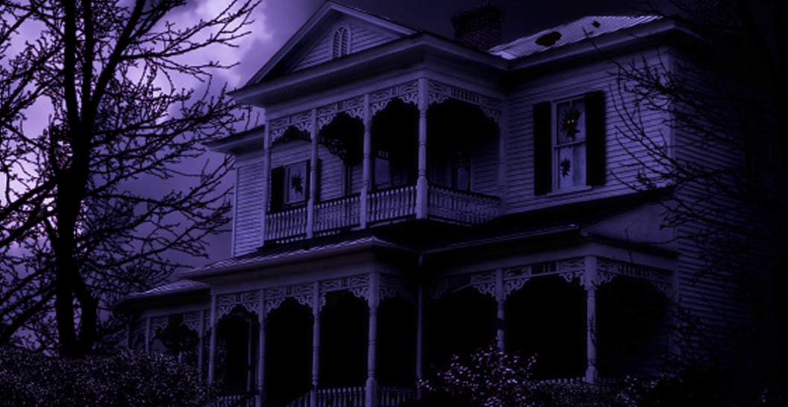

This is one of the most ancient buildings in Kolkata. It was constructed by Governor General Warren Hastings, and later it became the Governor's residence. Now, Calcutta University runs a women's college here. Many students have reported to see ghosts inside the building and on the grounds
William Hastings, once a Governor General of Bengal, built this ancient building as his residence. Called as Belvedere Estate, this haunted house in Kolkata is presently the location for an undergraduate women’s college under the University of Calcutta.
Rumours say that hotel girls and staffs have heard and seen an English gentleman entering the premises on his horse
and galloping throughout. God save the spectators!
Few years ago, a young boy died unnaturally while playing football in the Hastings ground. Odd stories have cropped as few have seen the shadow of the boy who has suffered the untimely death. Many other tales about this haunted place in Kolkata have been heard.
Hastings House, which also serves as the Institute Of Education For Women, is reported as another ghost house in Kolkata. This building served as the house of Warren Hastings, India's Governor General under the British Rule. Going by what some of the students have to say, they have seen a white man riding a horse and entering the campus many a times. A man, which they believe, is the ghost of Warren Hastings himself! A majority also believes the place to be haunted by the spirit of a boy who died on the field while playing football. None of the students dare to stay in the campus around evening, leaving the place right after their afternoon lectures. Call it spooky or just another fragment of imagination.
Another Story

Another story about this place goes like that there was a boy who lost his life while he was playing football so his spirit also haunts this house. Students have suffered from terrible injuries when they play football. So, if you are planning a visit, make sure you do not have a football with you.
This one is yet another haunted place in Kolkata which you must surely visit if you aren’t a faint-hearted person. There is a rumour that one could hear the footsteps of a person, supposedly Warren Hastings, who come to the place in search of his folder. That folder contained some old papers that could have saved him from getting impeached in London. Presently it’s the Women’s College of Calcutta University. Some students claim that they have seen a man riding a horse visit the place.
THE END
Thanks,
Feel The Fear